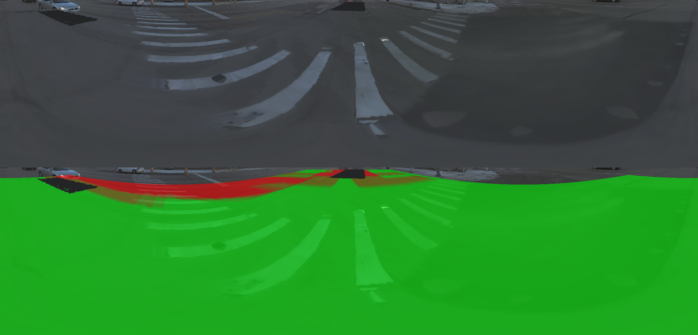
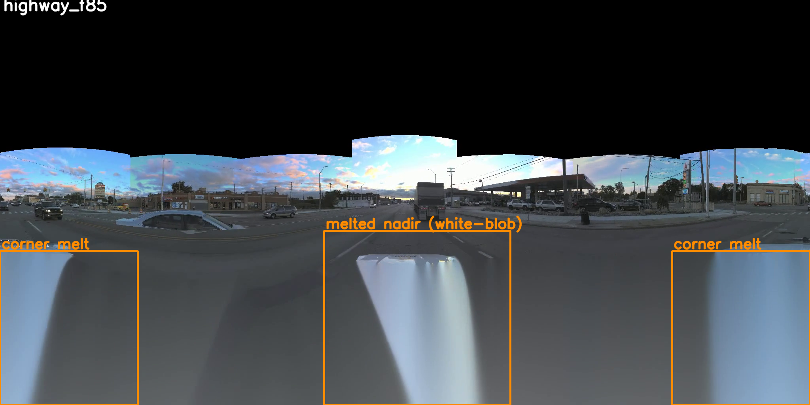

ERP nadir is black or blocked by the ego body. Each hole pixel → a ray → meets the LiDAR ground → a real 3D point X.
Search the whole log for frames that observed X — selected by ego distance, not time.
Three gates: source hood / trunk (two-box), dynamic objects (cars, people), shutter-time mismatch (EMC).
6 sources → median to check agreement → keep the nearest-to-median real pixel. Never average — averaging smears lane lines.
Sources disagree, or only grazing views exist → low-pass / flat fill. Never invent a lane line.
Every filled pixel is a real pixel some frame actually captured — where none did, we abstain.
Temporal reprojection — real pixels, no generation. Sky intentionally left black (this is the ground layer only).


Same 4 scenes × 93 frames, but stitch only what the cameras directly see; nadir & sky left black for the downstream generator (Cosmos) to outpaint under a perfect first frame.